Где поесть
Всё в центре, два-три километра от отеля
Облака
Ресторан-бар на 27 этаже отеля, панорамный вид на город
пр. Ленина, 26А — в вашем отеле
Пн–Сб 13:00–00:00 · Вс выходной
Лифт с вашего этажа — никуда ехать не нужно
Сто метров над городом. Столик к закату лучше занять заранее — вид того стоит.
Хачапури. Выпечка и вино
Грузинская кухня в ТРК «Горки»
ул. Артиллерийская, 136, ТРК «Горки»
Ежедневно 10:00–22:00
170 м — две минуты пешком, ближе всего к отелю
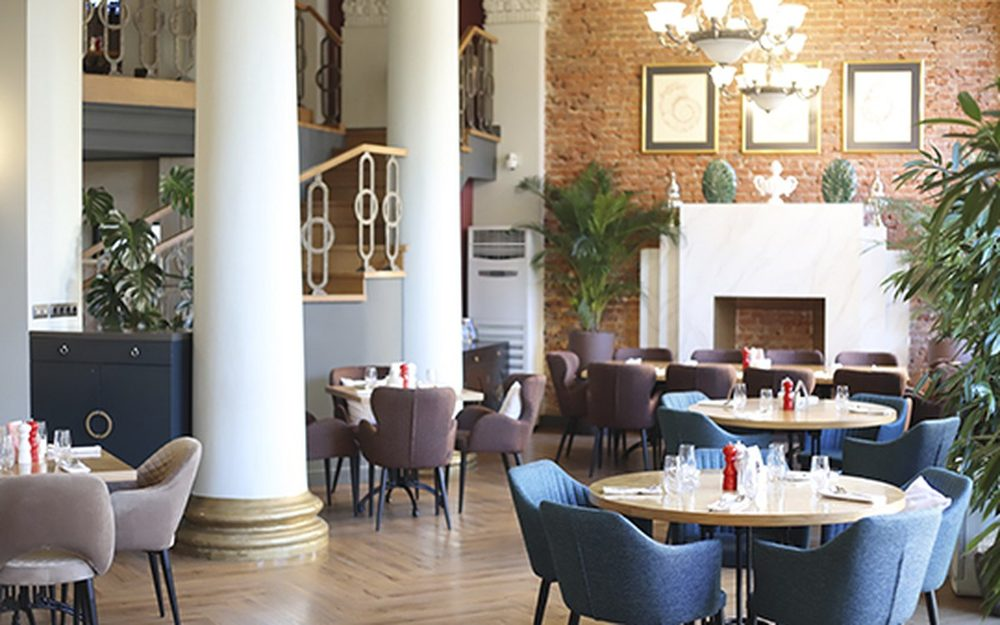
Сицилия
Итальянская, паста и пицца
ул. Тимирязева, 28
Пн–Пт 12:00–23:00 · Сб–Вс 11:00–23:00
Средний чек ≈2050 ₽
≈2 км
Редактор
Европейская и русская кухня в авторском прочтении
ул. Советская, 36
Вт–Сб 12:00–23:00 · Вс и Пн выходные
Wi-Fi, парковка
≈2 км
В воскресенье и понедельник закрыт — попасть получится только до свадьбы, в четверг или пятницу.
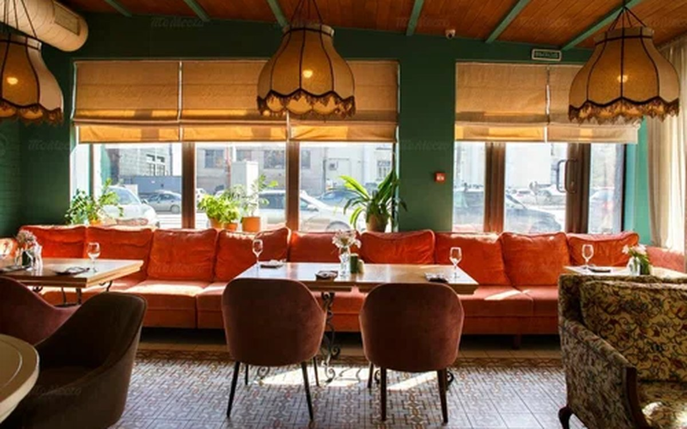
Буфет на Большой
Русская кухня в историческом центре
ул. Цвиллинга, 20
Ежедневно 12:00–00:00
Средний чек ≈1700 ₽
≈2,3 км — рядом с Кировкой
Про завтраки спросите по телефону — их подают по отдельному расписанию.
Цыплята табака
Тот самый цыплёнок табака, летняя веранда
ул. Кирова, 139
Ежедневно 12:00–24:00
≈2,5 км — на Кировке
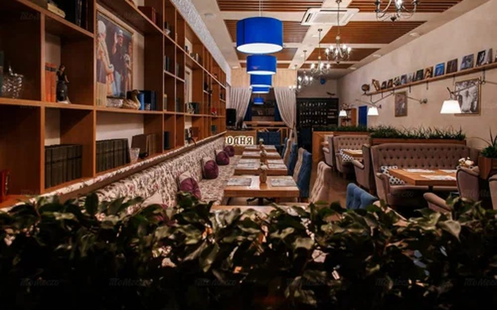
Родня
Русская кухня и стейки, вечером живая музыка
ул. Кирова, 82, второй этаж
Ежедневно 12:00–00:00
Средний чек ≈850 ₽, ланч от 550 ₽
≈2,7 км — прямо на Кировке
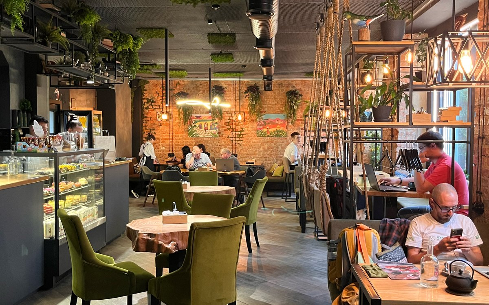
Ланчерия
Паназиатская: рамен, поке, роллы
пр. Ленина, 63
Ежедневно до 23:00
Ещё точки: ул. Академика Макеева, 26 · Советская, 38
≈3 км
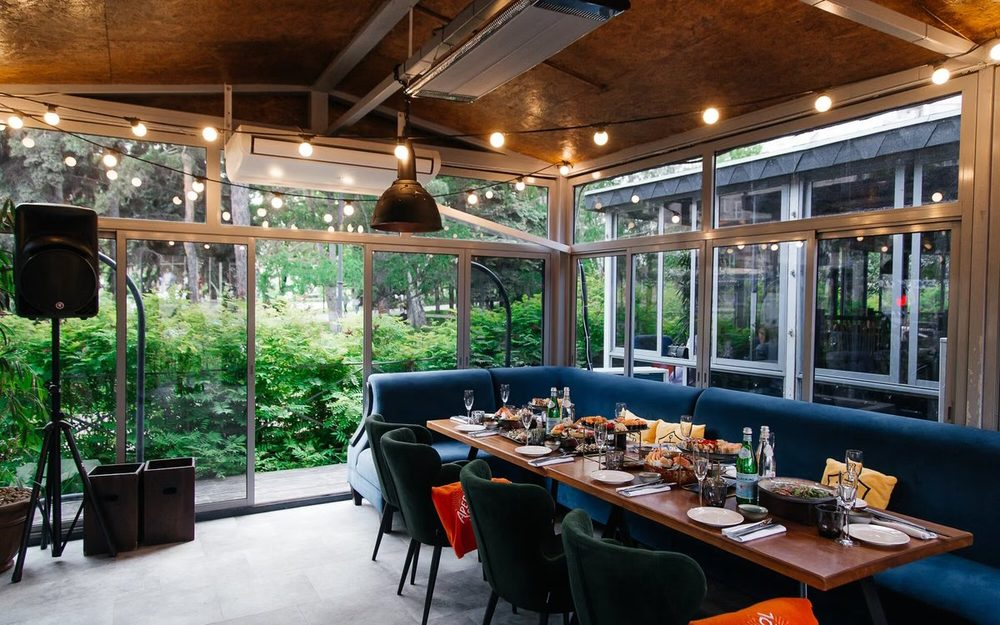
Asabi
Паназиатская: суши, утка, бранчи по выходным
пр. Ленина, 66а
Вс–Чт 12:00–23:00 · Пт–Сб 12:00–01:00
Средний чек ≈1550 ₽
≈4 км
Кухню хвалят, но еду иногда несут долго — не заходите, если спешите.
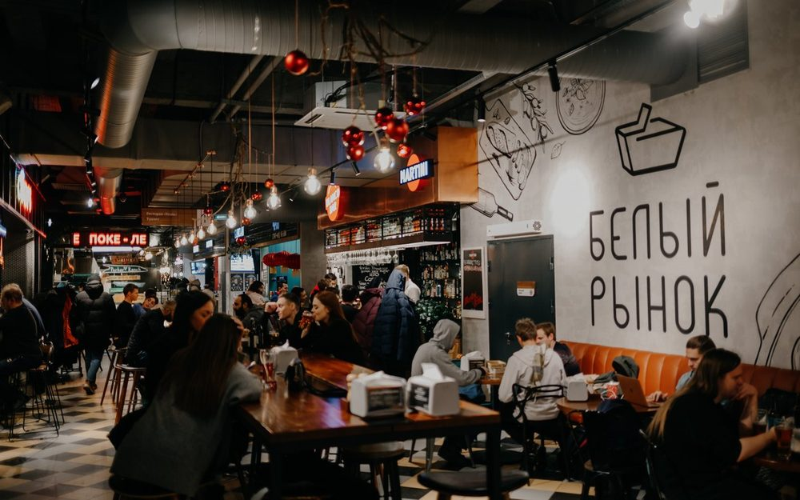
Белый рынок
Гастромаркет: двадцать корнеров и два бара
ул. Тернопольская, 6
Вс–Чт 11:00–22:00 · Пт–Сб 11:00–00:00
≈5 км
Лучший вариант, когда компания большая и все хотят разного.
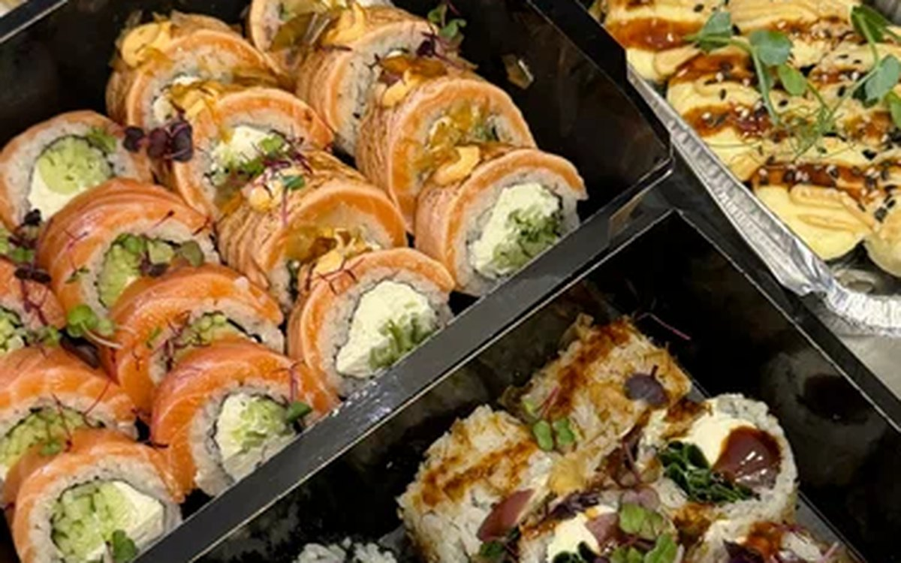
Sushi Манго
Доставка суши и роллов в номер
ул. Образцова, 28 — только доставка и самовывоз
Компанией больше четырёх человек — бронируйте стол заранее. В пятницу и субботу вечером места разбирают.
Куда сходить
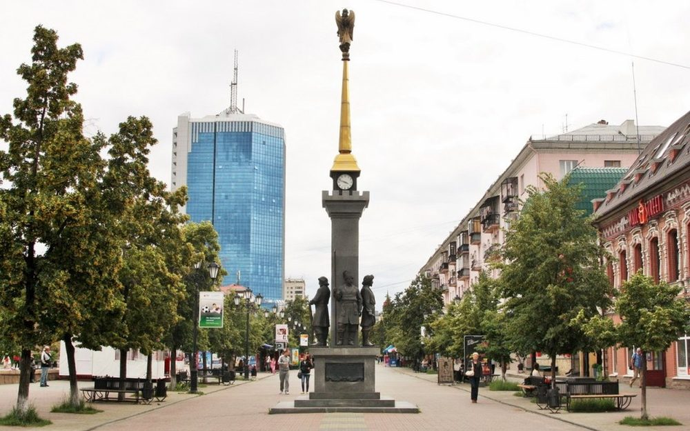
Кировка
Пешеходная улица, дома 92–100 по улице Кирова
Открыта всегда — лучше вечером
25 минут пешком от отеля по проспекту Ленина
Бронзовые скульптуры вдоль всей улицы, вечером подсветка и уличные музыканты. «Родня» и «Буфет» в двух шагах.
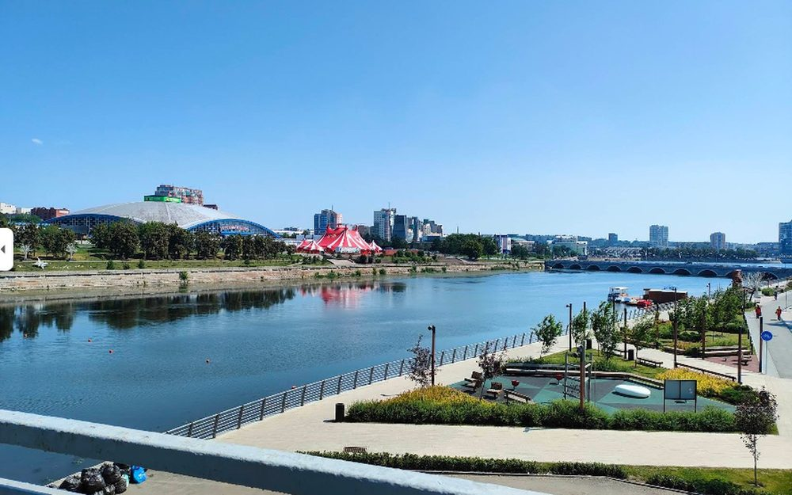
Набережная реки Миасс
Прогулочная набережная в центре
Открыта всегда
≈2,5 км — рядом с Кировкой
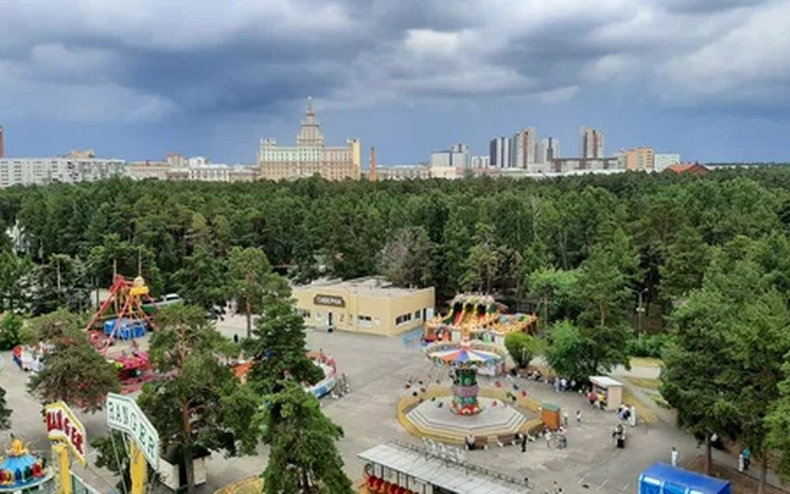
Парк имени Гагарина
Главный парк города, вход с улицы Труда
Лесопарк со скалами и прудами, аттракционы, зоопарк рядом
≈4,5 км
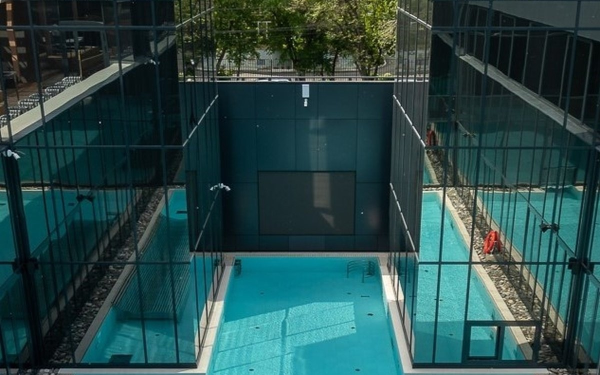
Хвоя
Термальный спа-комплекс на границе городского бора
ул. Лесопарковая, 9А
Возраст 14+
≈5,5 км
Открытый бассейн на 25 метров работает круглый год, восемь бань и саун, соляная зона, джакузи на крыше.
Салоны красоты
22 августа суббота — записывайтесь сейчас
Biolage
Причёска, макияж, маникюр
пр. Ленина, 25, первый этаж
Ежедневно 9:00–20:00
7 минут пешком от отеля
Через дорогу от «Видгофа» — можно собраться и вернуться, не вызывая такси.
Likos
Парикмахеры и маникюр, работают до позднего вечера
ул. Коммуны, 127
Ежедневно 10:00–22:00
≈4 км
Самые ровные отзывы в городе — почти две сотни оценок и почти все пятёрки.
MARIKA beauty bar
Парикмахерские услуги, маникюр, ресницы
ул. Труда, 156в
Ежедневно 9:00–20:00
≈4,5 км
Уточняйте, сколько времени займёт укладка: к 15:00 нужно быть на площадке.